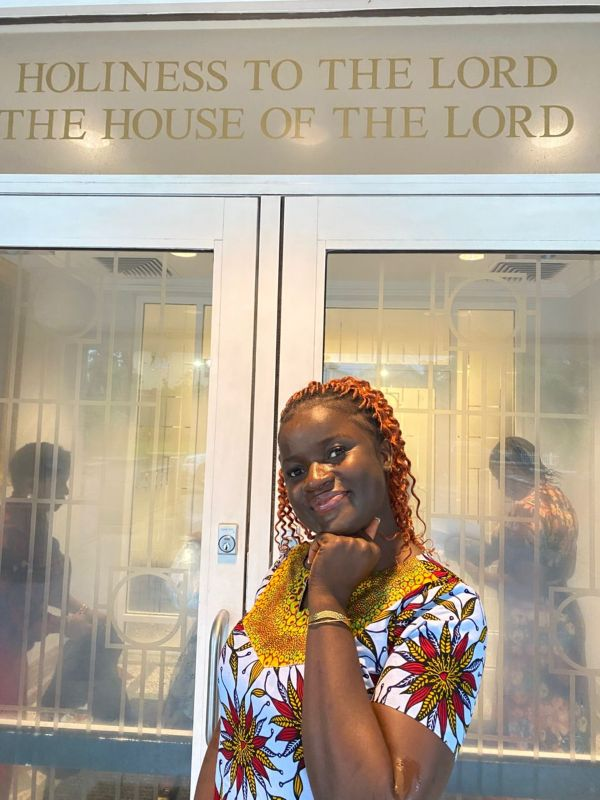
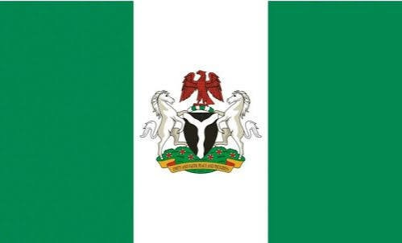

Blessing Koroma
About Me
My name is Blessing Koroma. I am a web development student with a passion for designing modern websites and learning new technologies. I enjoy programming, soap crafting, and helping businesses establish a professional online presence.

Bonny Island, Nigeria

Official Flag of Nigeria
Nigeria is the largest economy in Africa and one of the most culturally diverse countries in the world. It is known for its vibrant cities, music, natural resources, and welcoming people.